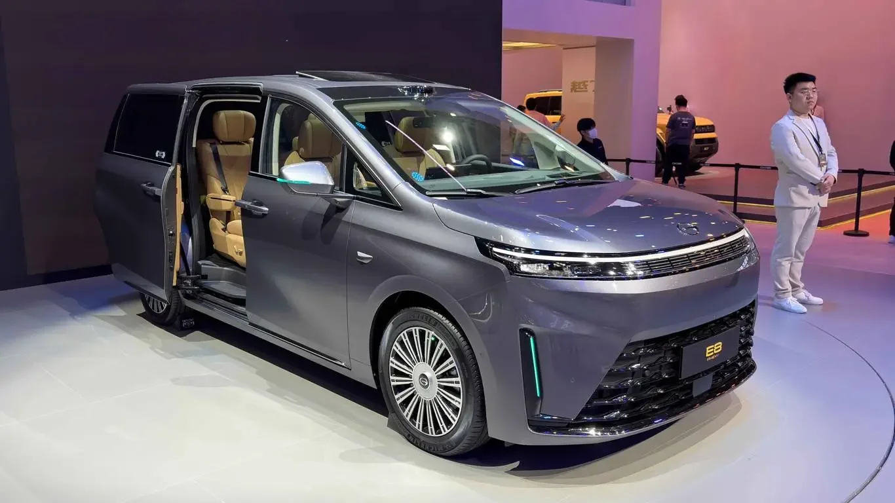
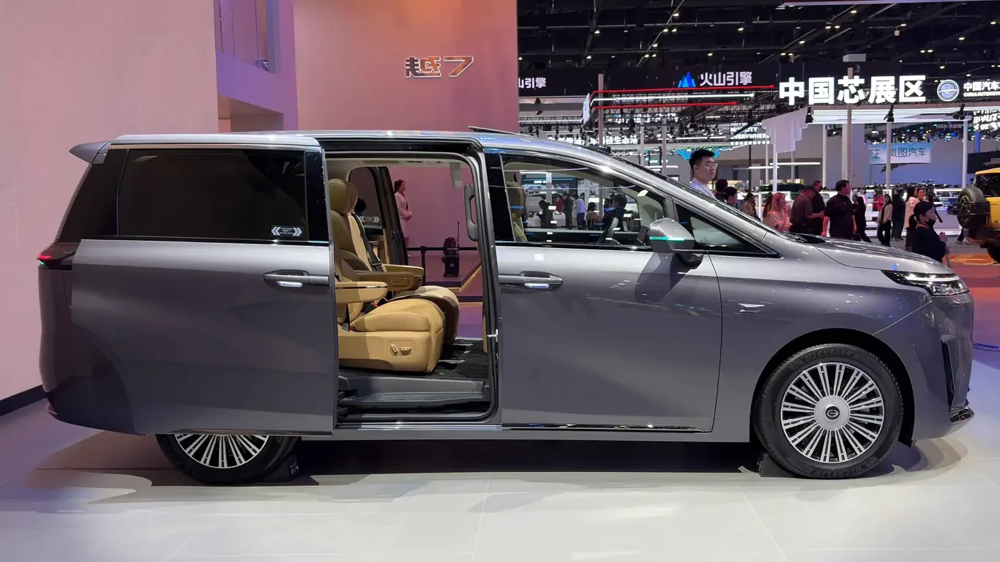
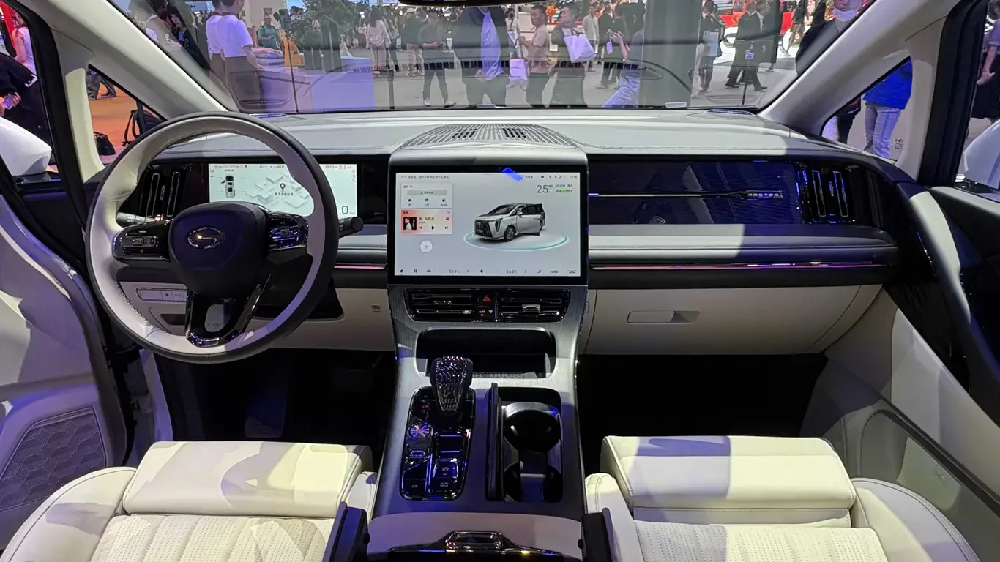
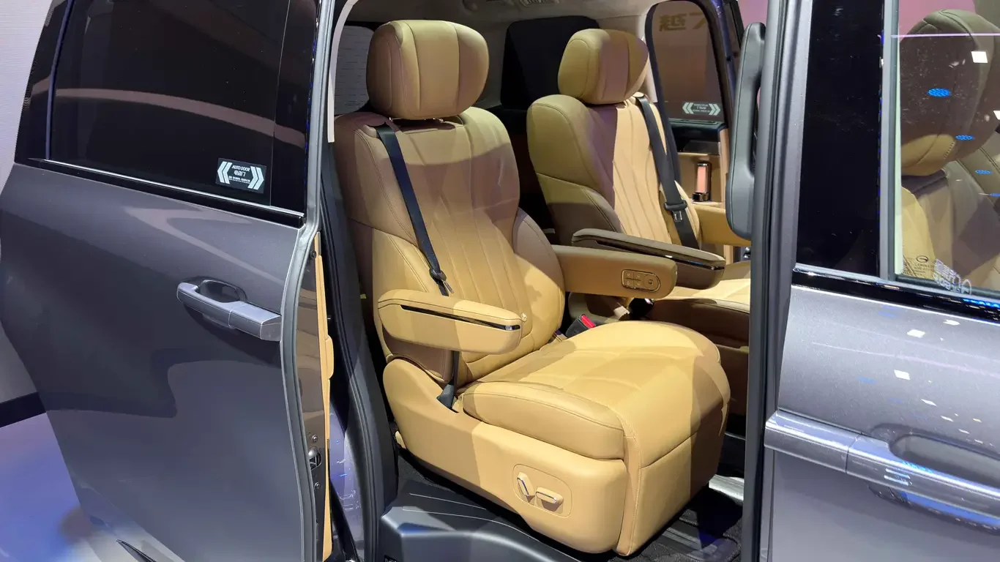
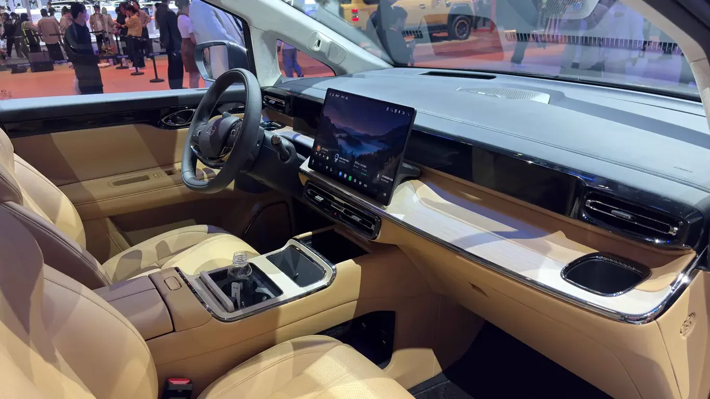

▲ 슬라이딩 도어를 열어 탄색 2열 시트를 드러낸 GAC E8 PHEV ⓒ 32Cars
중국 베이징모터쇼에서 지난 4월 처음 모습을 드러낸 GAC의 대형 MPV 'E8 PHEV'가 6월 정식 출시되며 본격적인 판매에 들어갔습니다. 중국 내수명은 '전기向往(샹왕) E8 PHEV'지만, 해외 시장에는 트럼프치(전기) 브랜드를 뗀 'GAC E8 PHEV'라는 이름으로 소개되고 있습니다. 이번 신형은 차체를 키우고 플러그인 하이브리드 시스템을 대폭 개선하면서, 동급 MPV 가운데 순수전기 주행거리와 연비 두 부문에서 세계기록을 새로 썼다는 점이 특징입니다.
1. 새로워진 E8 PHEV — 무엇이 달라졌나

▲ 이전 세대 대비 전장 80mm, 휠베이스 70mm가 늘어난 신형 E8 PHEV 측면 ⓒ 32Cars
신형 E8 PHEV는 전장·전폭·전고 5,000×1,900×1,778mm, 휠베이스 3,000mm로 이전 모델보다 각각 80mm, 70mm씩 커졌습니다. 가로형 라이트바와 사다리꼴 그릴에 크롬 장식을 더했고, 손잡이를 숨기지 않는 기계식 도어핸들과 슬라이딩 도어를 채택했습니다. 좌석은 2+2+3 배열의 7인승으로, 3열 시트는 접거나 수납할 수 있습니다.
2. 세계기록을 갈아치운 파워트레인 — 순수전기 281km·연비 3.98L
파워트레인은 1.5T 엔진(최고출력 125kW)에 전기모터를 결합한 플러그인 하이브리드 방식입니다. 배터리는 리튬인산철(LFP) 타입으로, 용량을 기존 25.57kWh에서 38.88kWh로 크게 늘렸습니다. 그 결과 순수전기 주행거리는 CLTC 기준 281km로 늘어나 플러그인 하이브리드 MPV 가운데 가장 긴 수치를 기록했고, 배터리를 소진한 상태에서의 연비는 WLTC 기준 3.98L/100km로 MPV급 세계기록을 세웠습니다. 완충·만유 상태의 복합 주행거리는 공식 발표 기준 약 1,200km이며, 별도 기록 주행에서는 최대 1,537km까지 달성했다고 알려졌습니다.
3. 멀티링크 독립현가와 라이다 — 달라진 하체와 첨단 기술

▲ 센터 터치스크린과 전자식 기어 셀렉터를 적용한 E8 PHEV 실내 ⓒ 32Cars
뒤 서스펜션은 기존 토션빔에서 멀티링크 독립 방식으로 바뀌었고, 상위 트림에는 SDC 전자제어 서스펜션이 더해져 승차감을 끌어올렸습니다. 다만 보급형 Pro 트림은 여전히 토션빔 방식을 유지합니다. 차량 두뇌 역할을 하는 칩은 퀄컴 스냅드래곤 8155가 탑재됐고, 상위 트림에는 192라인 라이다가 옵션으로 제공되며 모멘타(Momenta) 기반 주행보조 시스템이 도심 내비게이션 기반 자율주행 보조(NOA)를 지원합니다.
4. 실내 공간과 가격, 국내 출시는

▲ 통풍·열선·마사지 기능을 갖춘 E8 PHEV의 2열 캡틴시트 ⓒ 32Cars
실내에는 10.25인치 계기판과 15.6인치 플로팅 센터 터치스크린이 자리하고, 2열에는 통풍·열선·마사지 기능과 폴딩 테이블을 갖춘 캡틴시트가 마련됩니다. 여기에 소형 냉장고와 3존 공조, 17.3인치 2열 엔터테인먼트 스크린까지 더해 패밀리 MPV로서의 편의 사양을 갖췄습니다.

▲ E8 PHEV 실내 스티어링휠과 공조 디테일 ⓒ 32Cars
가격은 4개 트림 기준 18.98만~21.98만 위안(약 3,700만~4,200만 원 상당)으로 책정됐습니다. 현재까지 GAC E8 PHEV의 국내 출시 계획은 공식적으로 알려진 바 없으며, 중국 내수와 필리핀 등 일부 해외 시장을 중심으로 판매되고 있습니다.